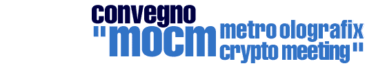

|  | ||
MOCM - Metro Olografix Crypto MeetingPresentazione | Programma | MOCM Keysigning party How-To | Come arrivare "E' veramente da porre in dubbio Cos'è la crittografia? Come funziona? Perche' usarla? Quali sono i pro e i contro ? E' legale oppure no? Un incontro suddiviso in due precisi momenti, l'uno teorico (la crittografia nelle nostre vite, moderatore della discussione l'avv. Andrea Monti), l'altro pratico (Hands On, moderatore Igor "Kobaiashi" Falcomatà di sikurezza.org) per cercare di offrire un panorama quanto più ampio possibile. Parallelamente al convegno si svolgerà un key-signing party per il cui regolamento è possibile leggere qualche nota dopo il programma della manifestazione. Durante tutta la giornata sarà disponibile un banchetto dove partecipare al key-signing party e ottenere informazioni e software crittografico.
Le linee guida generali sono disponibili, in inglese, al seguente indirizzo: Se non avete inviato la vostra chiave potete chiedere al responsabile del banchetto di scaricarla da internet, a questo punto dovrete dimostrare che la chiave sia proprio la vostra e continuare come al punto precente. Se non avete una chiave gpg, bhe potete informarvi su come crearla e comunque avere il foglio con le chiavi degli altri partecipanti che, una volta venuti a conoscenza dell'identità dei proprietari, potrete firmare con la chiave che genererete una volta tornati a casa. In Automobile: Uscita Autostrada A14 Pescara Nord / Città S.Angelo Uscita Autostrada A25 Pescara / Villanova Uscita Autostrada A14 Pescara Sud / Francavilla In treno: Per ulteriori informazioni o per inviare la chiave pubblica con cui partecipare al key-signign party scrivere a cryptomeeting@olografix.org Per informazioni sull'associazione culturale telematica Metro Olografix consigliamo la lettura delle pagine web relative. |
||
|
chi siamo? | gli eventi | associati! | mappa del sito | home http://www.olografix.org/cryptomeeting/index.html :: aggiornato al 9 settembre 2003Metro Olografix ACT 2003 :: copyright dei rispettivi detentori sito a cura di .nezmar. e ah:pook :: contact: info@olografix.org |
||